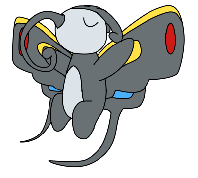

|
Winnie is a temporary member of Pouvoir and joined so that the team could escort her to Slateport's Contest Hall. It's been her dream to display her beauty and skills to the world by competing in contests.
|
Winnie
|
|

Design as of November 2019
Pokémon: Beautifly
Parents: Wurmple/Silcoon/Beautifly + ?
Current Status: Alive
Joined Team: Petalburg Forest
Voice Actor: all1e
|
|
Appearance
As a Silcoon and Beautifly, Winnie doesn't have many terribly odd differences. Her oddly-shaped antennae and discolored body could be an individual difference rather than genetics.
|
Useless Trivia
-
Winnie is a narcissist, leading her to see herself as the best and center of every topic and conversation.
|